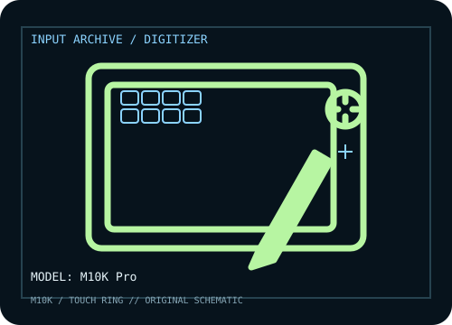

[ PEN TABLETS AND DIGITIZERS // IDENTIFIED COMPONENT ]
GAOMON M10K Pro
Medium-large pen tablet with touch ring, ten shortcut keys, and a battery-free stylus.

MODEL IDENTIFICATION: Manufacturer model / identifier: M10K Pro. Confirm the unit label, bundle contents, regional suffix, and revision against its product documentation before compatibility or repair work.
Model specifications
| Catalog subcategory | Pen tablets and digitizers |
|---|---|
| Exact model / SKU | M10K Pro |
| Active area | 254 × 158.75 mm (10 × 6.25 in) active area. |
| Pressure and pen technology | 8,192 pressure levels; battery-free AP32 pen with tilt support. |
| Resolution / report rate | 5,080 lpi digitizer resolution and ≥266 PPS report rate are specified by GAOMON. |
| Interface | USB-C wired connection; Android use requires a supported host and appropriate adapter/cable. |
| Driver, OS and compatibility | GAOMON lists Windows 7 or later, macOS 10.12 or later, and Android 6.0 or later; check its driver page for supported revisions and Linux support before relying on it. |
| Power | USB bus-powered; AP32 stylus is passive and does not require charging. |
| Calibration and service notes | Use GAOMON driver to map the tablet and adjust pressure sensitivity; verify pen alignment and ring/key functions on the installed OS. |
Preservation and service notes
USB bus-powered; AP32 stylus is passive and does not require charging. Use GAOMON driver to map the tablet and adjust pressure sensitivity; verify pen alignment and ring/key functions on the installed OS.
Record the as-found model label, accessories, host OS, driver/firmware version, calibration state, and test method. Published capability does not guarantee compatibility with a particular application or individual used unit.
Manufacturer sources
- M10K Pro — GAOMONManufacturer product page for area, AP32 pen, pressure, resolution, and report rate.
- Downloads — GAOMONManufacturer driver/manual archive; confirm M10K Pro and OS selection.
Manufacturer product and support pages can change. Save the applicable manual/driver release notes and verify the exact model and revision at setup.